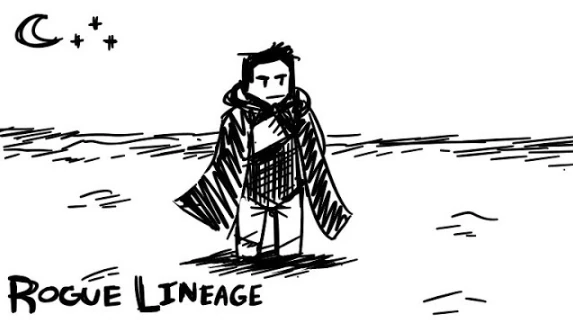

Rogue lineage wiki brasil
O site Rogue Lineage wiki BR é um projeto dedicado a ajudar/auxiliar a comunidade brasileira de Rogue Lineage, com informações completas sobre o jogo e dicas para melhorar sua jogabilidade no jogo. Estamos em constante desenvolvimento e aprendizado, buscando oferecer a melhor experiência para nossos usuários. Se você encontrar algum erro ou tiver sugestões, por favor, clique em "Help" e nos avise no nosso Discord. Sua colaboração é fundamental para que o Wiki Rogue Lineage BR continue crescendo e se tornando uma referência para a comunidade!
